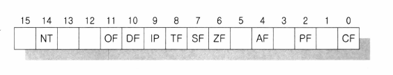
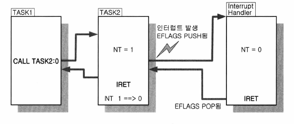

day 16: CALL 명령에 의한 Task Switching
오늘의 결과
jmp를 사용한 task switching인 day 12에서의 결과와 같습니다.
jmp 명령에 의한 Task Switching과 다른 점은,
- 컨텍스트 스위칭을 할 때
JMP 명령 => CALL 명령 - task를 처리하는 루틴에서
JMP 명령으로 컨텍스트 스위칭 => IRET
이 두 가지입니다(단 두 줄).
소스코드
1 2 3 4 5 6 7 8 9 10 11 12 13 14 15 16 17 18 19 20 21 22 23 24 25 26 27 28 29 30 31 32 33 34 35 36 37 38 39 40 41 42 43 44 45 46 47 48 49 50 51 52 53 54 55 56 57 58 59 60 61 62 63 64 65 66 67 68 69 70 71 72 73 74 75 76 77 78 79 80 81 82 83 84 85 86 87 88 89 90 91 92 93 94 95 96 97 98 99 100 101 102 103 104 105 106 107 108 109 110 111 112 113 114 115 116 117 118 119 120 121 122 123 124 125 126 127 128 129 130 131 132 133 134 135 136 137 138 139 140 141 142 143 144 145 146 147 148 149 150 151 152 153 154 155 156 157 158 159 160 161 162 163 164 165 166 167 168 169 170 171 172 173 174 175 176 177 178 179 180 181 | |
오늘 학습 내용
GDT에 있는 TSS 디스크립터에 대하여 셀렉터를 사용한 CALL 명령에서 태스크 스위칭이 일어나고 또한 IRET 명령을 통해서도 태스크 스위칭이 일어납니다.

TSS Descriptor의 Segment type부분에는 B 비트가 있습니다. 그리고 EFLAGS 레지스터의 14번 비트는 NT(nested) 비트로 사용합니다.
NT의 의미는 IRET 명령을 실행할 때 이것이 인터럽트 핸들러의 IRET인지, 태스크 스위칭되어 다시 이전의 태스크로 돌아가는 의미의 IRET인지 CPU가 구별할 때 사용합니다.
- LTR 명령
- TSS 디스크립터의 B 비트를 1로 세트합니다. 그리고 CPU는 현재 실행되고 있는 태스크의 B 비트는 항상 1이라고 인식합니다.
- CALL 명령
- CALL 명령에 의한 태스크 스위칭이 일어날 때 이전 태스크의 EFLAGS에 있는 NT 비트가 1로 세트됩니다.
- 그리고 B 비트도 1로 세트됩니다.
- 또한 TSS 영역에 있는 "이전 태스크로의 백링크" 칸에 구태스크의 TSS 디스크립터 셀렉터를 저장해 둡니다. 이전 태스크의 B 비트는 1인 채로 남아있습니다.
Task Switching과 Interrupt가 같이 걸리면?

위와 같이 인터럽트가 걸리더라도 EFLAGS 레지스터를 ISR(Interrupt Service Routine)에서 저장해 놓았다가 복원하기 때문에 문제가 없습니다.
CPU에서 지원하는 Context Switching 정리
JMP 명령으로 태스크 스위칭을 하는 것은 현재 실행하는 context의 EFLAGS의 B 비트가 항상 1이 됩니다. 그리고 이전의 context EFLAGS의 B비트는 항상 0이 됩니다.
JMP 명령으로 태스크 스위칭을 하는 것은 태스크끼리의 구속성이 없습니다.
우리가 최종적으로 구현할 태스크 스위칭은 타이머를 사용한 선점형 태스크 스위칭이고, 유저 모드의 여러 태스크를 스위칭 할 것입니다. CALL 명령으로 태스크 스위칭하는 방법은 비선점형 태스크 스위칭을 위한 기능입니다.
JMP 또는 CALL 명령을 통한 태스크 스위칭을 직접 사용하지는 않습니다. 하지만 이런 하드웨어적인(CPU에서 사용하는)방식에 대한 지식이 기반지식이 되기 때문에 좀 더 앞으로 구현할 TASK SWITCHING을 잘 이해할 수 있습니다.